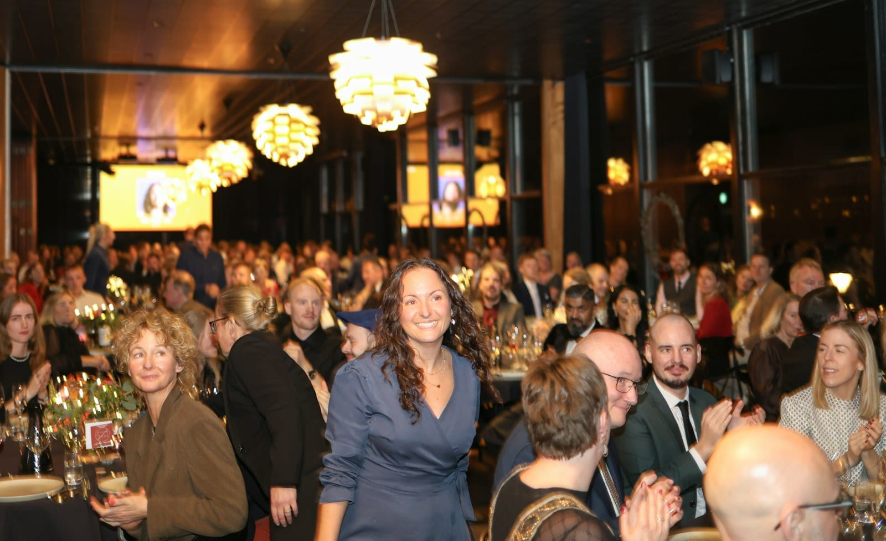

CORPORATE
Gala entertainment ideas
Here are some ways to plan the music at a gala or an award night, part by part through the program, with a few thoughts on the celebrity emcee and the silent disco.

- Great gala entertainment depends on musicians who know the program and follow it closely. The best ideas work with the program, from the reception and dinner to the remarks, the awards and the auction.
- The best-documented Denver gala we found had four musical acts at one event. Most award nights don't have any live music at all. That leaves a gala committee a great chance to stand out.
- A lot of gala committees are putting their money into the after-party now, and at two of Denver's largest galas, the after-party was a silent disco. A live act is another great way to fill that hour.
- Music that plays through the remarks or over the auctioneer can cost a gala money. Our musicians can stop on cue and stay quiet for as long as you need.
The venue is booked, the honorees are confirmed, and now somebody on the committee has to figure out the entertainment. Planning the music for a gala is a little different from planning it for a birthday party. The event follows a program, with remarks, an auction, a paddle raise, a video and walks to the stage, and the musicians need to know exactly where each of those falls. So here are our ideas for each part of the program.
Gala reception music as guests arrive #
We’d suggest having music playing when your first guests walk in, at a volume where your check-in team can still hear everyone easily. That could be a jazz duo on upright bass and guitar, a solo pianist, or a Spanish guitarist if you want your event to feel like a special occasion from the moment guests arrive. Reception music sets the tone for your event, because it’s the first thing your guests hear.
Dinner music your guests can talk over #
For dinner, a jazz trio can play softly, with brushes (soft wire sticks) on the drums, so your guests can keep talking through the whole meal. We think guests who can talk easily are more likely to bid, and a trio that’s put together to play softly will usually sound quieter than a full band that’s been turned down. Want to see how that fits with the rest of the program? Learn more about our live music for galas and award nights.
Walk-up music for honorees #
The band can play a short piece for each honoree, from the moment their name is read until they reach the podium, and stop right as they get there so nothing plays over their first sentence. It’s the simplest idea on this list, and it can make an award night feel polished. We’ll get the names and the order from you ahead of time, and the band will follow your emcee.
Music during the gala auction #
The band can stay silent through the bidding, or play something soft if your auctioneer wants it, and it can also play a short piece as each lot closes. Your auctioneer should have their own microphone, separate from the band’s.
Dance music after the last award #
Once the last award is given, it’s time to turn up the music and get people dancing. That can be a soul and R&B band on a ballroom floor, our yacht rock band if your crowd loves to sing, or a DJ with a live musician playing along. We can often run it all through the same sound system as dinner, so your guests won’t see a changeover.
Live band karaoke as the after-party #
If you want your gala after-party to be a blow out, this is an excellent choice. A live band plays the hits on its own and then hands the mic to anyone who wants a turn, whether that’s an honoree, a sponsor or the table that bid the most. The lyrics are on a screen, and a host keeps things moving. Learn more about our live band karaoke, or check out more ideas for a corporate after-party.
Americana music for a barn or ranch gala #
For a fundraiser on a ranch, in a barn or at a mountain venue, our Americana band can play Colorado favorites through dinner, and then it can get people dancing once the drums come in.
Solo piano for a small dinner #
Solo piano works beautifully for a donor dinner, a patrons’ evening or an awards dinner in a private dining space. One pianist can play standards through arrival and dinner, at a volume your guests can talk over, and then stop for the remarks. It’s the smallest idea here, and it can still make the whole dinner feel special.
The celebrity emcee and the silent disco #
A celebrity emcee or a keynote speaker can help sell tables, and a professional auctioneer can raise money. Neither one gets people dancing, though, and without music, guests may head home as soon as the program ends. The best-documented Denver gala we found had a broadcast emcee, a professional auctioneer and four musical acts, and it raised more than the galas that hired a big name and nothing else.
The people running two of Denver’s largest galas chose a silent disco for the after-party. A silent disco works, and it can keep noise complaints away, but it puts every guest in their own headphones just when they’re finally free to talk to each other. A live act keeps everyone together in that same hour, and if your venue has a decibel limit, we can put together a band that stays under it.
| Part of the program | The idea | The musicians we'd suggest |
|---|---|---|
| As your guests arrive | Music at the reception | Duo, solo piano or Spanish guitar |
| Dinner | Music your guests can talk over | Jazz trio with brushes on the drums |
| The awards | Music for the walk-ups | The same musicians, on cue |
| The auction | Quiet during the bidding | The same musicians, silent unless your auctioneer wants something soft |
| After the last award | Music for the dance floor | Soul and R&B, yacht rock or the DJ |
| The after-party | Live band karaoke | Four to six musicians and a host |
| The barn or ranch | Colorado favorites through dinner | Americana trio or quartet |
| The small dinner | Solo piano | One |
Does music make people give more at a gala? #
We didn’t find a study that tested music at a charity auction, a gala or a fundraiser and measured what people gave. The closest is a 2004 study in a university gym, where 646 people worked out to music that was either uplifting or annoying and were then asked to help a charity. Almost everyone would sign a petition either way. For the bigger ask, handing out leaflets, more of the people who had heard the uplifting music offered to help. That study compared uplifting music with annoying music, though, and it counted offers to help rather than money given.
A 2019 study in a restaurant found that changing the mood of the background music made no overall difference to tips. So music that puts guests in a good mood may make them a little more willing to say yes, though that isn’t the same thing as higher bids. At a gala, the music can keep the evening moving and then stop for the appeal.
Sources
- North, A. C., Tarrant, M., and Hargreaves, D. J. (2004). The effects of music on helping behavior: a field study. Environment and Behavior. Read the source
- Beer, A., and Greitemeyer, T. (2019). The effects of background music on tipping behavior in a restaurant: a field study. Psychology of Music. Read the source